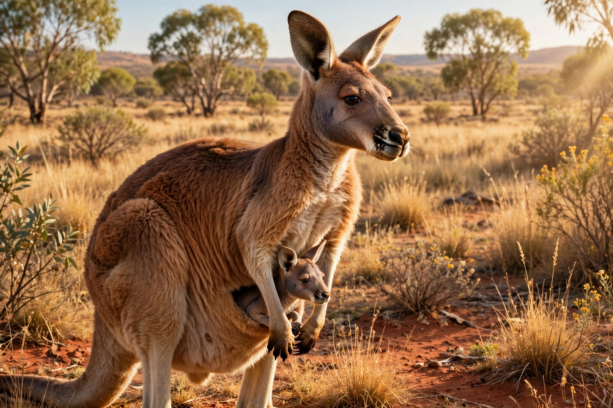

Marsupial
| Marsupials | |
|---|---|
 | |
| Scientific classification | |
| Kingdom | Animalia |
| Phylum | Chordata |
| Class | Mammalia |
| Infraclass | Marsupialia Illiger, 1811 |
| Orders | Didelphimorphia, Paucituberculata, Microbiotheria, Dasyuromorphia, Peramelemorphia, Notoryctemorphia, Diprotodontia |
| Distribution | Australasia and the Americas |
Marsupials are a group of mammals belonging to the infraclass Marsupialia, characterised by a distinctive mode of reproduction: females give birth to relatively undeveloped young that typically continue to develop within a pouch (marsupium) on the mother's abdomen, nourished by milk. Around 330 living species are recognised, roughly two-thirds of them in Australasia and the rest in the Americas, especially South America. Familiar examples are kangaroos, koalas, wombats, Tasmanian devils, and opossums.
Reproduction
Gestation is short — as little as 12–13 days in some bandicoots and opossums — and the newborn, blind and hairless, crawls unaided through the mother's fur to the pouch, where it attaches to a teat and completes development over weeks or months. Female marsupials have two vaginae and two uteri; males of most species have a bifurcated penis. Marsupials are born at a developmental stage comparable to an eight-week human foetus, a constraint that shapes their anatomy, including the forelimbs needed for the crawl to the pouch.
Evolution and distribution
The oldest marsupial fossils come from the Cretaceous of North America. Marsupials reached South America and spread via Antarctica to Australia while the southern continents were still joined as Gondwana; the close relationship between the South American monito del monte and Australian marsupials (the cohort Australidelphia) reflects this history. In Australia they radiated into most terrestrial niches, producing convergent counterparts of placental wolves (the thylacine), moles, anteaters, and gliders. In the Americas, the Virginia opossum has expanded northward into Canada, and South America retains opossums, shrew opossums, and the monito del monte.
Conservation
Many marsupial species are threatened by habitat loss, introduced predators such as foxes and feral cats in Australia, and disease — notably the facial tumour disease devastating Tasmanian devils. Australia has the world's worst modern mammal extinction record, with dozens of marsupial species lost since European settlement.
See also
References
Tyndale-Biscoe, Hugh (2005). Life of Marsupials. CSIRO Publishing.
Nowak, Ronald M. (2005). Walker's Marsupials of the World. Johns Hopkins University Press.